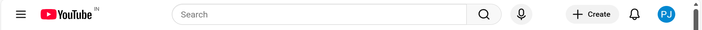
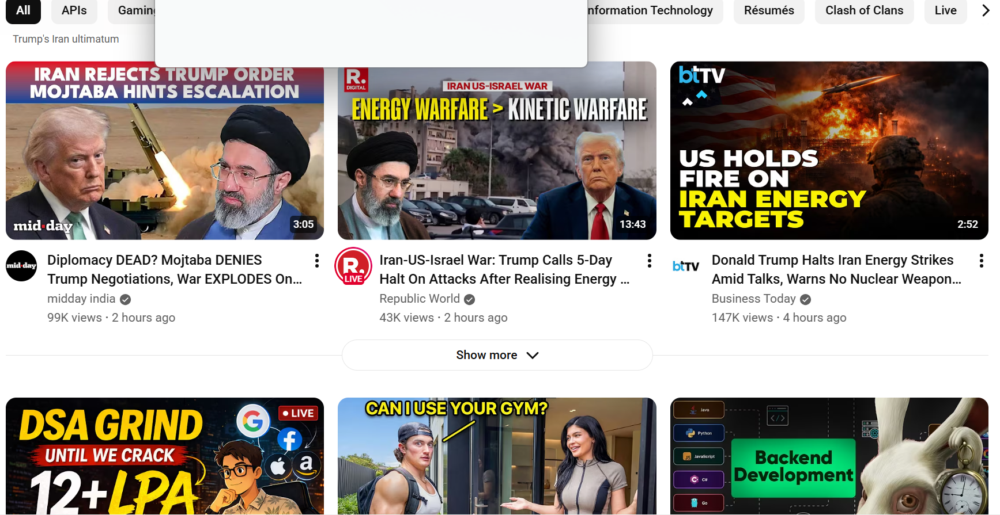

The navbar contains the YouTube logo, search bar, and user profile icon. It is used for navigation and searching content.

The sidebar provides quick navigation options such as Home, Subscriptions, and Library.
This section displays videos in a grid format. It updates dynamically based on user preferences.

Each video card includes a thumbnail, title, channel name, and view count. This is a reusable UI component.